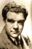

Country:United States, 101 minutes
Spoken languages:
Genres:Drama, Horror
Director(s):Rupert Julian
Writer(s):
Video Codec:Unknown
Number: 112


Certification:
Storyline:
A grotesquely disfigured composer known as "The Phantom" haunts Paris' opera house, where he's secretly grooming Christine Daae to be an opera diva. Luring her to his remote underground lair, The Phantom declares his love. But Christine loves Raoul de Chagny and plans to elope with him. When The Phantom learns this, he abducts Christine.
Cast: 


Medium: Original DVD,
Comments: Part of: Universal Studios Classic Monster Collection
Loaned: No
Aspect ratio: Unknown